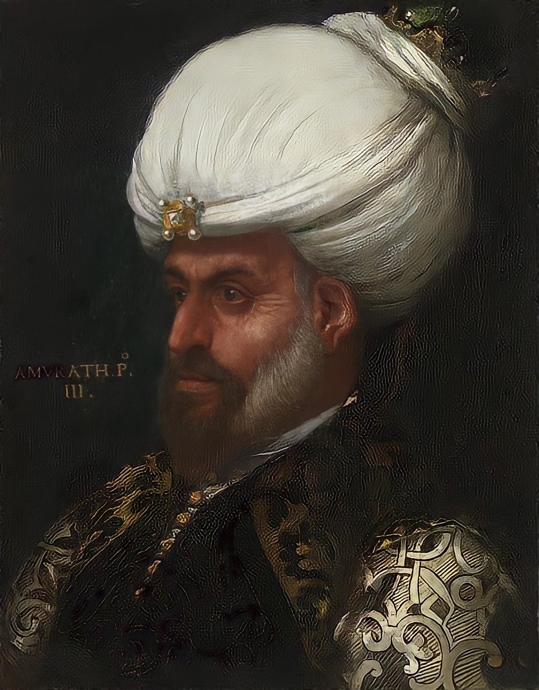

| önceki |  |
sonraki |
I. Murad (Osmanlıca: مراد اول, romanize: Murâd-ı Evvel), Murad-ı Hüdavendigâr veya Gazi Hünkar (29 Haziran 1326, Bursa – 15 Haziran 1389, Kosova), Osmanlı İmparatorluğu'nun üçüncü padişahıdır. Babası Orhan Gazi, annesi Nilüfer Hatun'dur.[2][3] Babası Orhan Gazi döneminde 95.000 km² olan devlet toprakları onun döneminde yaklaşık 500.000 km² kadar genişlemiştir.
"Hükümdar", "bey" anlamına gelen hüdavendigâr[4] (Osmanlıca: خداوندگار) unvanı verilmiştir. Tuğrası Sultan Murad bin Orhan olarak istiflenmiştir. Bazı kitabelerde Melikû'l-Âdil İl Gazi es-Sultan Giyâsû'd-Dünya ve'd-Din şanı ile anılmıştır. Adına kesilmiş olan gümüş ve bakır sikkelerde ve bazı diğer kitabelerde Murad bin Orhan el-Melik, el-Adil, es Sultanü'l Gaalib ad ve unvanları kullanılmıştır. Bazı kaynaklara göre, bu Osmanlıların İlhanlılara olan bağımlılığının sona erdiğini göstermektedir. Böylece Sultan unvanı ilk kez I. Murad zamanında kullanılmıştır. Batı kaynaklarında Amourad I olarak anılmaktadır.
Şehzadeliği döneminde Edirne'yi fethederek Balkanlara geçmiştir ve Balkanlarda fetihler yapmaya başlayarak Osmanlı Devleti'nin sınırlarını genişletmiştir. 40'ın üzerinde savaşı yönettiği ve hiç yenilmediği çeşitli kaynaklarda söylenmektedir. I. Kosova Savaşı'ndan sonra savaş alanını gezerken bir Sırp askeri olan Milos Obilic tarafından hançerlenerek öldürüldü.
Padişahlık Öncesi
İlk eğitimini annesi Nilüfer Hatun'dan almıştır. Annesi Rum asıllı Yarhisar tekfurunun kızı olduğu için, bundan ne kadar etkilendiği, örneğin Rumca bilip bilmediği meçhuldür. Çocukluğu ve gençliğinde İznik ve Bursa'da medreseler açıldığı bilinmekle beraber I. Murad'ın bu kurumlarda veya bunlarda bulunan değerli hocalardan İslamî eğitim görüp görmediği; yahut da babası ve dedesi gibi geleneksel Türkmen eğitimi görüp görmediği bilinmemektedir.
Babası Orhan Bey Bursa'yı aldığı zaman (1326'da veya bazı kaynaklara göre 1324'te), Aşıkpaşazade tarihine göre bu şehir "Bey Sancağı" olarak örgütlendi ve Şehzade Murad sancak beyi olarak atandı.[5] Diğer kaynaklara göre ise Bursa doğrudan doğruya devlet merkezi yapılmıştır.
I. Murad'a Hüdavendigar unvanı verildiği bilindiği; bu unvanın daha çok Bursa Sancağı'nda kullanıldığı; sonradan II. Murad'a da verildiği göz önüne alınırsa, Bursa Sancak beyi olarak görev yaptığı çok olasıdır.
Olasılıkla Bursa Sancak Beyi iken, ağabeyi Süleyman Paşa'nın maiyetinde Rumeli fetihlerine katıldı. Süleyman Paşa'nın Çorlu'da bir sürek avı sırasına 1359'da ölümünden sonra 3 yıl kadar (1359-1362) Beylerbeyi olarak Rumeli fetihlerine devam etti. Ancak bazı kaynaklar oğlu Süleyman Paşa'nın beklenmedik ölümüne çok üzülen ve çok yaşlı olan Orhan Bey'in son günlerini inzivaya çekilip sessiz geçirdiğini, devlet idaresini oğlu Murad Bey'e bıraktığını yazarlar.[3] Aşıkpaşazade ise Orhan Bey'in Süleyman Paşa ile aynı yılda öldüğünü bildirmektedir.[5]
Saltanatı
1362'de Orhan Bey ölünce, kendisi Rumeli'de bir muharebe ortamındayken, Bursa ahilerinin kararıyla, hükümdar ilan edilmiş ve Bursa'ya çağrılmıştır.
Murad Bey tahtına geçtikten hemen sonra Aşıkpaşazade'nin deyişiyle [5]
"Kendi vilayetinden ve Karesi'den eyi leşker cem edip"
hemen Rumeli'ye dönme hazırlığı yapmaya başlamıştır. Fakat komşu devletler ve diğer düşmanlar bu hükümdar değişikliğinden faydalanmak için hemen harekete geçmişlerdir. Bizanslılar Çorlu, Burgaz ve Malkara'yı geri almışlardır. Kısa bir zaman önce Osmanlılara katılmış olan Ankara'nın Ahileri şehirlerinden Osmanlı kale muhafızlarını kovmuşlardır. Büyük şehzade İbrahim ayaklanmıştır. Bizanslılar, anne tarafından VI. İoannis Kantakuzinos'un torunu olan ve imparator V. İoannis'un kızıyla nişanlı olan küçük şehzade Halil'i kışkırtarak ağabeyinin hükümdarlığını kabul etmemesine neden olmuşlardır.
Karamanoğulları da Osmanlılara hücum için ordusunu hazırlamaktaydı.
Murad Bey önce deneyimli komutanlar, ulema mensupları ve diğer ileri gelenler ile bir görüşme yapmış ve bu sorunların hepsine o yıl çare bulmuştur. Önce Ankara'ya hücum edip kaleyi ve şehri eline geçirmiş ve bozguncuları elimine etmiştir. Sonra Sultan Höyüğü (Eskişehir) almış ve Bursa'ya dönüp biraz daha savaş hazırlığı yapıp yapamadan Karamanoğulları üzerine yönelmiştir. Tarihçi Şükrullah'ın deyimiyle [6]
"Karaman Beyi de ileri gelip iki ordu karşılaştılar... Kargılar kırıldı, kılıçlar çentik çentik, kalkanlar paramparça oldu. Kişiler güz yaprağı gibi döküldü... Karamanlılar çerisinden Varsak, Tatar ve Türkmenden sayısız kişiler toprağa düştü... Karaman Beyi takımlarını, ağırlıklarını bırakıp kaçtı."
Bu sırada Eskişehir ve Bilecik taraflarında ayaklanma hazırlıkları içinde bulunan kardeşleri İbrahim ve Halil'i yakalattırdı ve boğdurdu.
O zamana kadar devlet göreneğine göre beylerbeylikleri ve sancak beylikleri hükümdarın kardeşlerine veya oğullarına verilmekteydi. Fakat Murad Bey kardeşlerini boğdurduğu ve çocukları da çok küçük yaşta olduğu için hanedan dışı atamalar yapmak zorunda kaldı: Lala Şahin Paşa beylerbeyi unvanı ile ordu komutanı; Bursa Kadısı Çandarlı Kara Halil Hayreddin'i de "kadı-asker" olarak atadı.
I. Murad Rumeli'ye hemen 1361'de dönüp Bizanslıların tekrar ellerine geçirdikleri Lüleburgaz ve Çorlu'yu yeniden eline geçirdi. I. Murad Lüleburgaz'da bir savaş meclisi topladı ve burada Edirne'nin alınması kararlaştırıldı. Hacı İlbeyi ve Gazi Evrenos idaresi altında akıncı kolları Malkara, Keşan, İpsala ve Dimetoka doğrusu üzerinde ilerleyip hem buraları ele geçirip hem de Balkanlardan yardım gelmesini önlediler. Lala Şahin Paşa komutasında Osmanlı birlikleri bir karmaşık Bizans-Bulgar ordusuna karşı Sazlıdere'deki muharebede galibiyet kazanıp; Edirne'nin fethine yol açtı. Böylece I. Murad, Bizans'ın Trakya'daki merkezi ve imparatorlukta üçüncü büyük şehir olan Edirne'yi (Adrianopolis) 1361'de ele geçirdi.[7]
Balkanlarda genişleme stratejisi uygulamak ve bunun daha kolay başarılmasını sağlamak için Edirne'yi devletin ikinci başkenti olarak seçti. Edirne, İstanbul ile Tuna yalıları arasındaki yolda en güçlü kaleydi; Bizans başkenti ve Balkan Dağlarından giden yolun önemli menzili olarak bu yolu kontrol etmekteydi ve Bizans'ın Balkanlardaki ordu ve idari merkezi idi. Edirne yeni kurulan Rumeli Beylerbeyliği'nin de merkezi oldu.
Bu stratejik avantajını kullanan I. Murad 1363'te Filibe (Philippolis/Plovdiv)'i ve Gümülcine'yi de eline geçirip İstanbul'a hem çok önemli vergi geliri, hem de hububat, pirinç gibi yiyecek maddeleri sağlayan ana yolların geçtiği Meriç nehri vadisini idaresine aldı. Bu aynı zamanda Bulgar Çarı John Aleksander'a Bizans aleyhinde Osmanlılara destek sağlaması için bir baskı yolu oldu.[8]
Artık hedef Bizans değil Balkanlar olmuştu. Bu yeni stratejik durum Bulgar, Bosna, Sırp, Macar ve Eflak devletlerini etkiledi ve Papa V. Urbanus'ın teşvikiyle yeni bir bağdaşıklık kuruldu. Hristiyan devletlerin birliklerinden oluşan ve Macaristan Kralı I. Layos komutanlığında bir Haçlı ordusu toplandı ve 1364 yazında bu ordu Balkanlar üzerinden Meriç vadisine inip Meriç nehri kenarından ilerlemeye başladı. Bu sırada I. Murad Anadolu'da Bursa'da devlet reformları ile uğraşmaktaydı.
Lala Şahin Paşa Edirne'yi korumak niyetiyle orada kalıp Hacı İl-Beyi komutasında bir süvari birliğini keşfe gönderdi. Haçlılar zaferlerinden emin olup Meriç kıyısında rahatlık içinde kampta bulunmaktaydılar. 26 Eylül 1364'te Hacı İl-bey'in birliği gün ağarırken aniden bir baskın hücumuna geçip bu Haçlı kuvvetini paniğe kaptırdı ve binlerce Bulgar, Sırp, Boşnak, Macar ve Eflaklı Haçlı asker öldürüldü veya Meriç'te boğuldu. Osmanlı tarihçileri bu müthiş baskını Sırp Sındığı olarak anmaktadırlar.[9]
1366'da Savoy Kontu olan Amedeus, yakın akrabası olan Bizans İmparatoru V. İoannis'a destek sağlamak için denizden küçük bir Haçlı seferine girişti. Venedik'ten 15 kadırga ile ayrılıp Konstantinopolis'e gitmekte iken Çanakkale Boğazı ağzında bulunan ve 12 yıl önce Osmanlılar tarafından Trakya'da ele geçirilip yerleşke kurulan ilk kent olan Gelibolu'ya hücum edip I. Murad kale garnizonuna zamanında yardım sağlayamadığı için bu şehri eline geçirdi. Bu stratejik kale böylece 10 yıl Latin-Bizans idaresinde kalıp ancak 1377 sonunda yine Osmanlılar tarafından geri alındı.[10]
I. Murad Bursa'dan Katalan Paralı Askerler Birliği kalıntıları elinde bulunan Karabiga'yı kuşatıp aldıktan sonra Rumeli'ye geçerek bir müddet Dimetoka ve Edirne'de oturdu ve bu kentlerin imarı ile uğraşıp buralarda birer saray ve camii yaptırdı. 1366-1368'de Bulgarlar'ın elinde olan Kızılagaç, Yanbolu, İhtiman, Samakov, Aydos ve Süzebolu kentleri ve Bizans idaresinde olan Hayrabolu, Pınarhisar, Vize ve Kırklareli Osmanlılar eline geçti. Bulgar Kralı İvan Şişman ülkesinin önemli bir kısmını kaybetmiş oluyordu. 1368'de kız kardeşi Prenses Mara'yı I. Murad'la evlendirdi ve Bulgaristan'ın Osmanlılar'ın yüksek egemenliği altında bulunan bir vasal ülke olma statüsünü kabul etti.
1371'de Sırpsındığı Savaşı'nın intikamını almak isteyen Sırpları Çirmen Savaşı'nda yendi. Aynı yıl İstanbul'un yakınında bulunan Çatalca ele geçirildi. Osmanlı sınırları Sırp Despotluğu'na dayanmıştı. 1374'te Sırp Des
Bu gelişmeler Bizans'ı da yakından etkilemişti. Bizans İmparatoru V. İoannis, I. Murad ile müzakerelere girerek 1373 başlarında bir anlaşma yapıp Bizans İmparatorluğu'nun yıllık vergi ödeyerek Osmanlılar yüksek egemenliği altında bir vasal ülke olmasını kabul etti.[10] Böylece Osmanlıların Rumeli'ye geçip yerleşmelerinden 20 yıl sonra Balkanlarda bulunan üç devlet de (Bizans, Bulgaristan ve Sırbistan) Osmanlıların yüksek egemenliğini kabul etmiş oluyordu.
larla yapılan anlaşmaya göre Bizans İmparatoru Osmanlı Sultanı istediği zaman imparatora yakın bir komutan altında asker de gönderecekti. Böylece Mayıs 1373'te Bizans İmparatoru Anadolu'da I. Murad'ın Çandaroğulları'na karşı açtığı bir savaşa katılmak zorunda kaldı.[10]
Ailesi
- Eşleri:
- Gülçiçek Hatun - Yıldırım Bayezid'ın ve Yahşi Bey'in annesi.
- Tamara Hatun - Bulgar Kralı'nın kızı.
- Paşa Melek Hatun - Kızıl Murad Bey'in kızı.
- Paşa Melek Hatun - Kızıl Murad Bey'in kızı.
- Erkek çocukları:
- Yıldırım Bayezid
- Yahşi Bey
- Yakup Çelebi
- Savcı Bey
- Şehzade İbrahim
- Kız çocukları:
- Nefise Melek Hatun - (Karamanoğulları Beyi Alâeddîn Ali Bey ile evlendi.)
- Sultan Hatun
I. Murad hakkında daha fazla bilgi için buraya tıklayın.